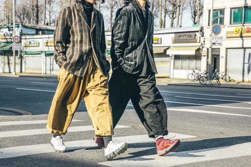

- DOCUMENT
- BIRTHDAYSUIT
- YOUTH
Fashion brands
과거의 이러한 매개체가 없었을 그 당시에는 잡지란 것을 통해 패션 브랜드를 알아볼 수 있었다.
과거의 패션 잡지란 16세기 엘리자베스 여황 시대부터 존재 해왔으며, 그 당시 내용들은 전염병을 피하는 방법같은 것에 대한 팁을 제공 하고 있었다.
그 후로 여성 일기, 관보, 작은 팸플릿 등이 제법 이야깃 거리를 담아 시중은 떠들썩해지기 시작 하였다. 과거의 잡지는 여성 중심의 잡지였고한다. 프랑스의 우리 14세기 시대에 잡지는 귀족이 입고 있는 궁중 복장에 대해 소개하였다. 궁정 밖에서 귀족 복장을 만들 드레스메이커 들은 궁중 패션의 '트렌딩'이 무엇인지 알 수 있게 되었고 생각보다 진지 패션 일러스트도 그곳에 조금씩 실렸다. '잡지'라는 말이 처음으로 등장한것 1732년이 되서야 에드워드 케이브 라는 사람의 서점에서 '메거진'이라는 단어가 소개되었다. 이때부터 본격적인 패션 잡지의 시대가 열렸다.
18,19세기에는 여성 일러스트가 등장했다.
세기를 거듭할수록 남성 또한 패션에 대한 관심이 늘어남에 따라 남성을 위한 다양한 패션 잡지들이 발간 됨에 따라 다양한 브랜드들을 소개하고 알 수 있다.
이 사이트는 남성 브랜드 소비자와 교감을 함으로써 제품이나 서비스에 대해 소비자가 열광하도록 하는 브랜드를 알아볼 수 있는 곳이다.